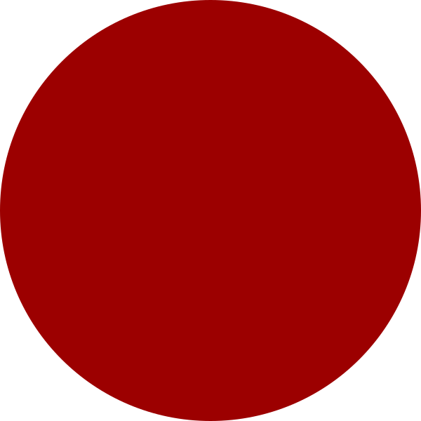

<!DOCTYPE html>
<html>
    <head>
        <!-- Some default setting -->
        <meta charset="utf-8">
        <title></title>
        <meta name="description" content="">
        <meta name="viewport" content="width=device-width, initial-scale=1">

        <!-- Load CSS and pkgs -->
        <script src="js/jspsych.js"></script>
        <script src="js/plugins/jspsych-html-button-response.js"></script>
        <script src="js/plugins/jspsych-instructions.js"></script>
        <script src="js/plugins/jspsych-image-keyboard-response.js"></script>
        <script src="js/plugins/jspsych-html-keyboard-response.js"></script>
        <link href="js/css/jspsych.css"  rel="stylesheet" type="text/css">
    </head>
    <body>
        <script>

            // -----------------------------
            //            Welcome    
            // -----------------------------
            var welcomeScreen = {
                type: 'html-button-response',
                stimulus: 'Welcome to our experiment',
                choices: ['Click here to start'],
            };

            // ------------------------------
            //         Instruction    
            // ------------------------------
            var instructScreen = {
                type: 'instructions',
                pages: [
                    "<p> In this experiment, a circle will appear in the middle of the screen. </p>"+ 
                    "<p> If the color is <b>Blue</b>, press \"F\". </p>" +
                    "<p> If the color is <b>Red</b>, press \"J\".  </p>" +
                    "<div style='float: left'>"+
                    "<p>Press the key \"F\" </p></div>"+
                    "<div style='float: right'>"+
                    "<p>Press the key \"J\" </p></div>",
                    'Let\'s start some pratice first',    
                ],
                data:{
                    screen_id: 'instruct'
                },
            };

            // ------------------------------
            //        The whole task   
            // ------------------------------
            var taskTimeline = [];
            taskTimeline.push(
                welcomeScreen, 
                block
            );

            // -------------------------------
            //      Run the experiment
            // ------------------------------- 
            var aTask = {
                timeline: taskTimeline,
                on_finish: function(){
                    jsPsych.data.displayData()
                }
            };
            jsPsych.init(aTask)

        </script>
    </body>
</html>